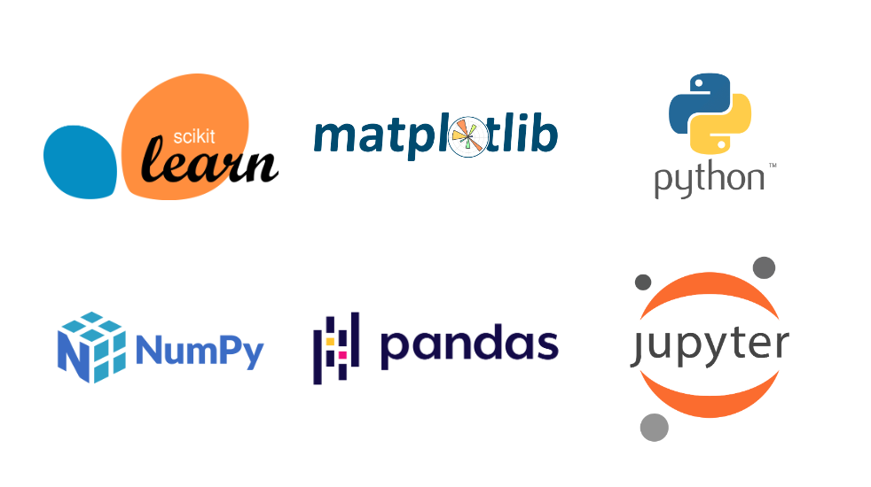
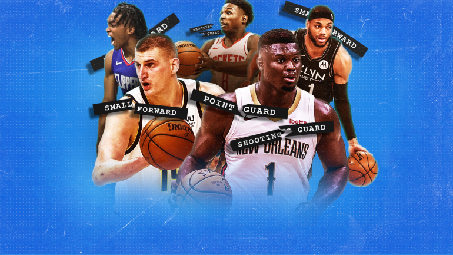
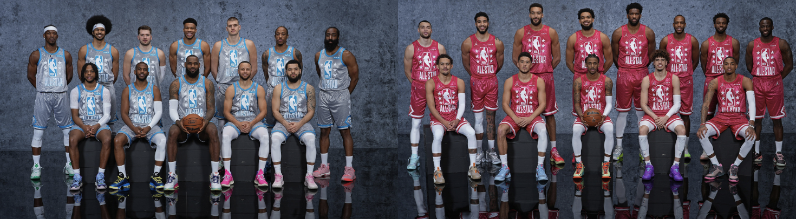
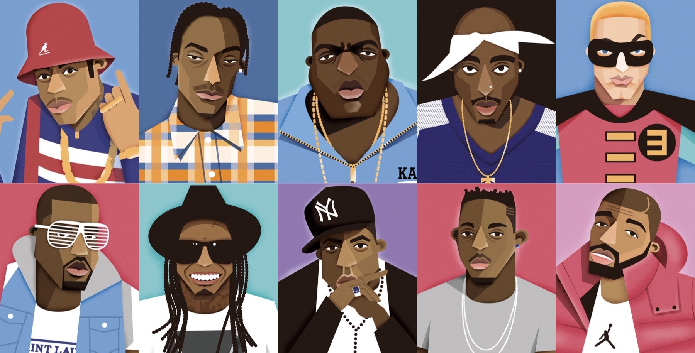
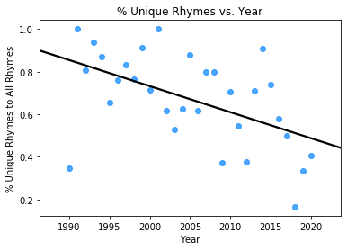

Resume
Algorithmic Audit: Modeling the New York City Civilian Complaint Review Board and Auditing the Model Fairness

For paper covering the background/investigation of inequity, click here
Please note that this functions only as an overview of the work done! Please take a look at the final papers (linked above) or their corresponding Python notebooks:
Background
This paper and analysis was done during Spring 2022 as part of the course DSC 167 : Fairness and Algorithmic Decision Making at UC San Diego's Halıcıoğlu Data Science Institute.
The purpose of the assignment and aim of this paper was to find a system or mechanism that has a potential inequity, model the decision making process, and evaluate/audit this model using parity measures and frameworks of distributive justice.
I hope that this paper can teach data scientists or those interested in the field about how ethics and fairness come into play in data science and the algorithms us data scientists create.
The New York City Civilian Complaint Review Board (CCRB), the system in this context, is an agency independent from the New York Police Department that investigates complaints against NYPD officers regarding allegations of excessive or unnecessary force, abuse of authority, discourtesy, or offensive language.
Throughout the investigation process, the review board may obtain further evidence from the NYPD (e.g., body camera footage) and conduct interviews of anyone involved to use alongside any details the complainant submitted in their original complaint.
Specific complainant/victim attributes collected include age, gender, and ethnicity. The complainant may also provide details on the officers's sex, race, and physical appearance.
The potential inequity I investigated involves the "disposition" of a given complaint, or the ruling the CCRB determines.
A substantiated complaint is one for which the alleged conduct was found to have happened and violated NYPD rules, potentially leading to punishment or repercussions for the accused officer.
The data shows that complaints submitted by Black complainants were less often substantiated than non-Black complainants.
This discrepancy was the launching pad for my investigation of this inequity and audit of the CCRB.
Tools Used

- Python
- Jupyter Notebooks
- Scikit Learn for Modeling
- Pandas for Data Cleaning, Exploration, etc.
- NumPy for Data Cleaning, Exploration, etc.
- Matplotlib for Data Visualization
The Data
The data originally comes from ProPublica and contains information regarding complaints made starting in 1985 up to 2020.
The model uses data starting in 2000 because key demographic features like complainant ethnicity were not tracked before then.
All complaints include the type of complaint made, the precinct in which the alleged action took place, demographics on the complainant, and demographics on the accused officer.
See allegations.csv and allegations_cleaned.csv.
Additional Data
Borough was not a column initially included in the dataset, so the precincts were mapped to their apporpriate boroughs using data pulled from the NYPD's website.
See precinct_boroughs.csv.
In order to understand the different categories of complaints and the potential consequences an officer may face, I referenced the CCRB's rules. This information was used in feature engineering.
In the first, investigatory paper, data on arrests in NYC and stop, question, and frisk patterns were investigated. Please visit this link for the arrests data and
this link for the stop, question, and frisk data.
The Logistic Regression Model
A simple logistic regression model with with L2 regularization was used to model the CCRB's decision process.
To train the model, a simple 75%-25% train-test split was used.
To combat the class imbalance present (only about 25% of complaints were deemed substantiated), the class_weight hyperparameter, which assigns a weight to each class that the model uses for penalizing, was used.
In order to determine the proper decision thereshold, different utility functions were compared, ultimately leading to a threshold of 0.527 instead of the default 0.5.
This means that anything that the model classifies points as substantiated if the resulting regression prediction is at least 0.527. See the paper for more details.
Features
The features used in the model are:
contact_reason (or text indicating why the officer approached the civilian)mos_ethinicity (officer's ethnicity), rank_incident (officer's rank at time of incident)mos_gender (officer's gender)complainant_gender (omplainant's gender)mos_age_incident (oofficer's age at time of incident)complainant_age_incident (complainant's age at time of incident)borough (the borough in which the incident took place)black (whether the complainant is Black)allegation (brief description of the allegation)fado_type (type of complaint)- time/date related features (`month_received`, `year_received`, `month_closed`, and `year_closed`)/li>
All categorical features except allegation and fado_type were one-hot encoded while the exceptions were ordinal encoded. The numerical features were scaled.
Evaluation Metrics
The class imbalance makes accuracy ill-suited for this model, so the F1 score was used instead. The test performance metrics for all groups is as follows:
- Accuracy Score: 0.623882406425216
- Recall score: 0.526413921690491
- Precision score: 0.3299571484222828
- F1 score: 0.4056513409961685
Overview of Parity Measures and Fairness Results
For a breakdown of different parity measures and fairness in machine learning, take a look at Google's Machine Learning Glossary: Fairness.
With the original model, a singular threshold was used. Under this model, both demographic parity and equalized odds were not satisfied, but predictive value parity was met. The original model substantiated complaints from Black civilians far less often than it did for non-Black complainants. The violation in equalized odds means the model gave more complaints submitted by non-Black complainants the “benefit of the doubt” and classified more CCRB-unsubstantiated complaints as substantiated than for Black complainants.
To try and improve these metrics for fairness, 2 different threshold tests were conducted to find better thresholds based on groups (complainant ethnicity in this case). Firstly, the thresholds that maximize utility for the individual group were used. These thresholds satisfied demographic parity and equalized odds, but not predictive value parity. Secondly, the thresholds that satisfy the 3 parity measures (demographic parity, equalized odds, and predictive value parity) were found using the training data and then tested with a separate dataset. See the paper for a more in depth breakdown on how these tests were conducted.
Depending on what is most important to the decision-making body (CCRB), different threshold(s) would be chosen. Maximizing utility overall enforces equality for all complainants, while maximizing utility for each group is more equitable. Satisfying demographic parity ensures that substantiation doesn’t depend on complainant ethnicity. Equality of odds would focus on ensuring that the chance of obtaining the benefit of substantiation is equal across groups, while predictive value parity focuses on ensuring deserving complainants receive substantiation and underserving complainants don't. The table below demonstrates different group thresholds that could be used, depending on the goal (maximizing utility or enforcing a parity measure).
| Threshold for Black Complainants |
Threshold for non-Black Complainants |
Test |
Demographic Parity |
Equality of Odds |
Predictive Value Parity |
| 0.527s |
0.527 |
Max utility overall |
Not satisfied |
Not satisfied |
Satisfied |
| 0.522 |
0.546 |
Max utility per group |
Satisfied |
Not satisfied |
Not atisfied |
| 0.522 |
0.541 |
Enforce equality of odds |
N/A |
Strictly satisfied |
N/A |
| 0.522 |
0.535 |
Enforce predictive value parityl |
N/A |
N/A |
Not atisfied |
Conclusion
Hopefully this paper shows that often times, an algorithm or model may (unintentionally) be unfair or inequitable if such parity measures or metrics of fairness are not considered. As for this specific example of the CCRB, the model missses out on lots of data perhaps gathered in the investigation process, but still demonstrates evidence of inequities or unfairness. The bottom line is that any model or algorithm absolutely should consider its fairness!
NBA Players Position Classifier

SOURCE
Links
Table of contents
Background
As someone who has been playing basketball since the second grade and has been a Warriors fan since birth, the NBA and basketball in general have always held a special place in my heart. As time goes on, statistics and analytics have played an increasingly larger role in the world of basketball. With this project, and my NBA All Stars Classifier, I wanted to use my love of basketball in developing and praciticing new Data Science skills.
As basketball players have gotten more skilled and talented and as the game itself has revolutionized, the notion of positions increasingly becomes a dated aspect of the game. The commissioner of the NBA, Adam Silver, acknowledged that the NBA "has moved increasingly to positionless basketball" when discussing the possibility of removing positions from the All-NBA decision process, which honors the best players in the league.
With this project, I hope to understand basketball positions using statistics and machine learning. If an ML model can predict a player's position based on his stats, then maybe this player doesn't play positionless basketball and adheres to his traditional role as a guard/forward/center. If a model gets it wrong, then maybe the player has a unique play style that doesn't conform to the historic statistics of players in his positions before him.
Keep reading to learn more about the data used, the approach I took to building this classifier, and the cool findings the model yielded!
(Back to top)
The Statistics
The NBA tracks almost 50 different statistics for every player in the league. Many statistics are often unknown to most basketball fans, so using only the common statistics will make the most sense for everyone.
Here are some basic definitions of the statistics I will be using in my classifier:
- True shooting percentage (TS%): a metric that demonstrates how efficiently a player shoots the ball. Takes into consideration field goals, 3-pointers, and free throws (unlike other metrics like field goal percentage).
- Rebounds per game (RPG): a metric that shows how many total rebounds (both offensive and defensive) a player averages per game.
- Assists per game (APG): a metric that shows how many total assists a player averages per game.
- Points per game (PPG): a metric that shows how many total points a player averages per game.
- Blocks per game (BPG): a metric that shows how many total blocks a player averages per game.
- Steals per game (SPG): a metric that shows how many total steals a player averages per game.
(Back to top)
Statistics Source
The training data comes from Kaggle. The test data come from Basketball Reference:
(Back to top)
Usage
Please refer to the Jupyter Notebook Viewer or the .ipynb file to view all the code for the classifier. The notebook with all the data cleaning can be seen here.
The source file contains all the functions used to clean/manipulate the data and DataFrames.
(Back to top)
The Methodology
In the initial data cleaning process, the players' positions were simplified to include 5 classes:
| Position |
Proportion in Training Data |
| Forward |
0.399 |
| Guard |
0.396 |
| Center |
0.199 |
| Guard/Forward |
0.003 |
| Forward/Center |
0.003 |
Notice that forwards and guards make up nearly 80% of the datasest, with centers making just under 20% and the hybrid positions making up hardly 1% altogether. Since this is a multiclass problem with some class imbalance, I wanted to test different models. Another consideration was the effect of including Year as a feature. Theoretically, if the way a player of a given position hasn't changed over time, then a classifier without year should perform better (or differently) than a classifier with year as a feature.
I tried both random forest modesl and XGBoost models. I went with random forests as a better alternative to decision trees in that random forests are more robust to overfitting. I also chose to explore XGBoost classifiers as they might work better for the class imbalance. In total, 4 different models were originally trained: 2 random forests (one with year as a featuere and one without) and 2 XGBoost classifiers (one with year as a feature and one without). The features for both models were as follows:
- TS%: true shooting percentage
- RPG: rebounds per game
- APG: assists per game
- PPG: points per game
- BPG: blocks per game
- SPG: steals per game
- Year: year of that season (e.g, rows from the 1980-1981 season has 1981 as its year)
- All Star: whether that player was an All Star that season
- MVP: whether that player was the MVP that season
(Back to top)
Training
Using Scikit's GridSearchCV, I tested out several combinations of different hyperparameters. The training times for both models were extremely long. See below for the paramters tested for each type of model:
Parameters tested for random forests:
{'n_estimators': [300,500,700], 'max_features': ['sqrt', 'log2'], 'max_depth' : [5,10,15,20,25,None], 'criterion' :['gini', 'entropy'], 'random_state' : [18]}
Parameters tested for XGBoost classifiers:
{'max_depth': [3,6,10], 'learning_rate': [0.01, 0.05, 0.1], 'n_estimators': [100, 500, 1000], 'colsample_bytree': [0.3, 0.7]}
Given that this a multiclass classification problem, I found that accuracy was the most straightforward evaluation metric. Additionally, I looked at the proportion of players for a given position that were misclassified. For example, if 10 out of 40 centers in the test data set were not classified as centers by the model, then the proportion would be 0.25. See below for the results found with the 2018-19 season as the test set:
| model |
test accuracy |
prop wrong for centers |
prop wrong for forwards |
prop wrong for guards |
| random forest without year |
0.390 |
0.48 |
0.19 |
0.26 |
| random forest with year |
0.392 |
0.47 |
0.19 |
0.23 |
| XGBoost without year |
0.378 |
0.53 |
0.2 |
0.27 |
| XGBoost with year |
0.390 |
0.55 |
0.16 |
0.25 |
Both types of model performed better when year was included in the feature set, with year boosting accuracy more for the XGBoost models than the random forests. What stuck out to me most was how much better the random forests were at classifying the minority class, centers.
Additionally, the 2 types of classifiers found different features to be more important. The Random Forest classifiers thought RBG (rebounds per game) were more important than BPG (blocks per game), while the XGBoost classifiers didn't. Both classifiers had similar levels of feature importance for APG (assists per game) and PPG (points per game). See the notebook for feature importances.
Some pitfalls of both classifiers include:
- Neither classifier was able to classify the hybrid positions, GF and FC, correctly. This is likely because only about 0.006 of the training data have these hybrid positions.
- Both the All Star and MVP features had 0 importance for all 4 models tested. Including irrelevant features could make cost (e.g., runtime) unnecessarily high.
- Although XGBoost was used to try and combat the class imbalance (around 2x guards and forwards than centers), XGBoost did worse and classifying centers than Random Forest did.
In effort to create a better performing classifier, a new position column will be created. Hopefully making this problem only 3 classes instead of 5 will yield a better classifier. Also, MVP and All Star will be removed from the feature list. It seems that the year feature is particularly useful for classifying guards. Lastly, although XGBoost yielded a slightly higher accuracy, it classified centers much worse than the random forest (which was unexpected). Since the XGBoost didn't provide the expected benefits and its training time is much slower, Random Forest will be used going forward.
Final Model
Based on the findings above, I went with a Random Forest model with TS%, RPG, APG, PPG, BPG, SPG, and Year as features. See below for the feature importances and test accuracies:
| Feature |
Importance |
| RPG |
0.254 |
| APG |
0.251 |
| BPG |
0.233 |
| SPG |
0.116 |
| PPG |
0.077 |
| TS% |
0.037 |
| Year |
0.031 |
| season |
test accuracy |
prop wrong for centers |
prop wrong for forwards |
prop wrong for guards |
| 2018-19 |
0.736 |
0.47 |
0.19 |
0.24 |
| 2020-21 |
0.715 |
0.46 |
0.22 |
0.27 |
| 2021-22 |
0.704 |
0.54 |
0.19 |
0.27 |
Clearly, this model performed much better than the 1st round. However, it started performing worse for the more recent seasons. This may be some indication of a shift coming in basketball, where players' statistics and general playstyles don't reflect the typical notions of positions in seasons prior.
(Back to top)
Findings
Draymond Green, Ben Simmons, Giannis Antetokounmpo, LeBron James, Kevin Durant, Nikola Jokić, and Jayson Tatum are some consensus "positionless" NBA players (see this CBS article and this Blearcher Report article). One might expect the classifier to predict these players' posititions incorrectly if they are truly "positionless." As with all things basketball, several things transcend the stat sheet, but hopefully these results provide some interesting insights! The table below shows the correct position (Pos) and the model's prediction (pos_pred) for these "positionless" players:
| Player |
Pos_2019 |
pos_pred_2019 |
Pos_2021 |
pos_pred_2021 |
Pos |
pos_pred |
| Giannis Antetokounmpo |
F |
F |
F |
F |
F |
F |
| Kevin Durant |
F |
F |
F |
F |
F |
F |
| Draymond Green |
F |
F |
F |
G |
F |
F |
| LeBron James |
F |
F |
G |
F |
F |
F |
| Nikola Jokić |
C |
F |
C |
F |
C |
F |
| Jayson Tatum |
F |
F |
F |
F |
F |
F |
Giannis Antetokounmpo, Kevin Durant, and Jayson Tatum were always correctly classified as forwards for the 3 seasons used as test data. This may be because forwards were the most common position in the training data, so the classifier knows forwards particularly well.
Basketball Reference has LeBron James listed as having played both the forward and guard positions. In the 2020-21 season, where James was listed primarily as a guard, the classifier predicted him incorrectly to be a forward. In the eyes of the classifier, it seems that James presents as a forward more than a guard.
In the 2020-21 season, Draymond Green was listed as a forward, but misclassified as a guard. Green had to step up that season considering Klay Thompson's absence that season and the fact that other guards like Jordan Poole (playing only his 3rd year professionaly after some time in the G-League) and Gary Payton II (who hardly played at all) were early in their development.
Hopefully some of these insights were interesting! Please feel free to explore the Python notebooks on your own!
(Back to top)
Source File
Legality
This personal project was made for the sole intent of applying my skills in Python thus far and as a way to learn new ones. It is intended for non-commercial uses only.
(Back to top)
Predicting NBA All Stars

SOURCE
Links
Table of contents
Background
As someone who has been playing basketball since the second grade and has been a Warriors fan since birth, the NBA and basketball in general have always held a special place in my heart. As time goes on, statistics and analytics have played an increasingly larger role in the world of basketball. With this project, and my NBA Player Position Classifier, I wanted to use my love of basketball in developing and praciticing new Data Science skills.
This classifier, specifically a K-Nearest Neighbors Classifier, uses statistics from nearly 19,000 players' seasons from 1980-2017. I will then test my classifier using statistics from the 2018-19 season, the 2020-21 season (skipping the season interrupted by the pandemic), and the most recent season, 2021-22. Given that all star voting involves non-expert (fan) voting and some level of subjectivity, hopefully the results will help reveal which players' All Star designation(s) match the data, which players were overlooked, and which players were perhaps overrated.
(Back to top)
The Statistics
The NBA tracks almost 50 different statistics for every player in the league. Many statistics are often unknown to most basketball fans, so using only the common statistics will make the most sense for everyone.
Here are some basic definitions of the statistics I will be using in my classifier:
- True shooting percentage (TS%): a metric that demonstrates how efficiently a player shoots the ball. Takes into consideration field goals, 3-pointers, and free throws (unlike other metrics like field goal percentage).
- Rebounds per game (RPG): a metric that shows how many total rebounds (both offensive and defensive) a player averages per game.
- Assists per game (APG): a metric that shows how many total assists a player averages per game.
- Points per game (PPG): a metric that shows how many total points a player averages per game.
- Blocks per game (BPG): a metric that shows how many total blocks a player averages per game.
- Steals per game (SPG): a metric that shows how many total steals a player averages per game.
(Back to top)
Statistics Source
The training data comes from Kaggle. The test data come from Basketball Reference:
(Back to top)
Usage
Please refer to the Jupyter Notebook Viewer or the .ipynb file to view all the code for the classifier. The notebook with all the data cleaning can be seen here.
The source file contains all the functions used to clean/manipulate the data and DataFrames.
(Back to top)
The Methodology
Since only about 5% of players in a given season are designated All Stars, a classifier that does well predicting the minority class is needed. Additionally, instead of using accuracy as the evaluation metric, recall was chosen instead given my interest in capturing all the All Star players in each season. In this Medium article, by Leihua Ye, PhD found that K-Nearest Neighbors performed best for prediciting rare events, especially when looking at ROC Curves. Given these findings, KNN's lack of of training time, and its simplicity, KNN was chosen.
(Back to top)
Training
The main hyperparamter in KNN is of course the number of neighbors k. Several sources indicate that n ** 2, where $n$ is the number of instances in the sample, is a good heuristic for best k. Other important hyperparameters are weights, or how the nearest neighbors are used in determining the final prediction, and metric, or which distance metric KNN uses. I used Scikit's GridSearchCV to combine both hyperparameter tuning and training the model with cross validation to determine the final model. See below for the parameters tested and the ultimate model parameters:
Parameters tested:
{'clf__n_neighbors' : [19, 21, 23, 25, 27], 'clf__weights' : ['uniform','distance'], 'clf__metric' : ['minkowski','euclidean','manhattan']}
Best paramters:
{'clf__metric': 'minkowski', 'clf__n_neighbors': 19, 'clf__weights': 'distance'}
(Back to top)
Findings
Below is a table summarizing the recall scores:
| Season |
Recall Score |
| 2019-2018 |
0.615 |
| 2020-2021 |
0.741 |
| 2021-2022 |
0.667 |
The classifier was able to find a majority of each season's all stars, performing best for the 2020-21 season.
The Results
See below for some discussion on the model's predictions. See the table linked here to see a full summary of the 3 NBA seasons used in testing and the results for each player.
"Properly Rated" All Stars: The True Positives
There were only 6 players who were voted as All Stars for all 3 seasons (2018-19, 2020-21, and 2021-22) and were deemed "properly rated" for all 3 seasons. In this case, "properly rated" means that the all star voting seemed to match the data and the KNN model's findings.
- Giannis Antetokounmpo
- James Harden
- Joel Embiid
- Kevin Durant
- LeBron James
- Stephen Curry
"Overrated" All Stars: The False Negatives
The "overrated" players are instances where the classifier predicted a player wasn't an All Star when in reality they were. These cases could include players that perhaps contribute in ways that don't show up on the stat sheet or players that a particular fan favorites. For instance, in the 2018-19 season, future hall-of-famers and NBA champions Dirk Nowitzki and Dwyane Wade were voted as All Stars, but the classifier thought differently. That season was both Nowitzki and Wade's last season in the NBA, so while their stats maybe weren't up to par, their legendary careers earned them the designation.
For 2 of the 3 seasons used in testing, Ben Simmons (2018-19 and 2020-21), Khris Middleton (2018-19 and 2021-22), Nikola Vučević (2018-19 and 2020-21), and Rudy Gobert (2020-21 and 2021-22) all fell under the "overrated" category. Middleton might not have the opportunity to shine in the stats playing alongside generational talent Giannis Antetokounmpo, thus resulting in a false negative. The same could be said about Ben Simmons who played with Joel Embiid, but his recent (lack of) play may make fans agree with the "overrated" designation.
Another interesting case of "overrated" all stars is Nikola Jokić. The model deemed him to be "overrated" in 2018-19, but in the 2 previous seasons (during which he got consecutive MVP honors), the model correctly predicted him as an All Star.
"Underrated" Players: The False Positives
The "underrated" players are those that the classifier predicted to be all stars, but weren't voted as all stars in reality. Perhaps the stats of such a player were exceptional, but other aspects like their winning percentages weren't up to par. See below for the players from the 2018-19, 2020-21, and 2021-22 seasons that were deemed underrated and were never selected as an All Star in any of the 3 seasons:
- Brandon Ingram (2020-21)
- CJ McCollum (2020-21)
- John Wall (2018-19)
- Jrue Holiday (2019-19)
- Pascal Siakam (2021-22)
- Shai Gilgeous-Alexander (2020-21, 2021-22)
One interesting player here is Pascal Siakam, who was voted an All Star in the 2019-2020, the season after he won a championship. Siakam was perhaps overlooked by fans and/or the media playing in Toronto (as opposed to in the U.S. or a larger market team). For 2 seasons in a row, young guard Shai Gilgeous-Alexander was "underrated" in the eyes of the model. His team, the OKC Thunder, had a terrible record this past season and finished in 14th place in the Western Conference. This lack of winning, and the fact that OKC is a smaller market, may explain why Gilgeous-Alexander was overlooked in all star voting.
(Back to top)
Source File
Legality
This personal project was made for the sole intent of applying my skills in Python thus far and as a way to learn new ones. It is intended for non-commercial uses only.
(Back to top)
Has Hip-Hop Gotten Worse? - Web Scraping and NLP Project

SOURCE
Links
Table of contents
Background
Hip-hop/rap music was founded in the 1970's and became widespread during the 80's, kicking off the decade-long era known as the "golden age" of hip-hop (NPR).
Today, hip-hop/rap is music's most popular and commercially successful genre. Every region has its own style of rap and numerous musical and cultural trends have defined hip-hop over the years.
Many fans believe that rap music has gotten worse over the years, crediting this decline to the rise of what is called mumble rap, a style characterized by artists rapping inchorently and/or melodically and using a variety of ad-libs as opposed to actual lyrics. But, while mumble rap has certainly risen in popularity, does this mean that "good" rap, music filled with clever and meaningful lyrics, has vanished from the genre?
To answer this question, I will be analyzing the lyrics of the best rap song from every year from 1990 to 2020.
(Back to top)
Song Selection
Songs from 1990-2003 will be pulled from Complex article, "The Best Rap Song, Every Year Since 1979" and the songs from 2004-2020 will be the winners of the Grammy Award for Best Rap Song (first awarded in 2004).
- Since many artists have won the Best Rap Song award multiple times (Kanye West, JAY-Z, Kendrick Lamar), this analysis focuses more on whether or not the best of the best rap songs from more current years are just as good as those from the 90's and early 2000's rather than finding out if the hip-hop/rap genre as a whole has seen a decline in song quality.
- "The Choice Is Yours" by Black Sheep is not on AZLyrics and also not on Spotify, so I will use one of Complex's honorable mentions, "My Mind Playin' Tricks On Me" by Geto Boys.
- Complex's choice for 2002 ("Lose Yourself" by Eminem) is the same as the 2004 Best Rap Song recipient, so similarly I will use one of Complex's honorable mentions, "Grindin" by The Clipse.
(Back to top)
Lyrics Source
The lyrics for each will be scraped from AZLyrics. Since these lyrics are user submitted, the formatting of lyrics is variable. This variation is largely in how chorus lyrics are posted. For example, one song may have all the lyrics to the entire chorus typed out each time whereas another may just use '[Chorus]' or '[2x]' to avoid repetition. My hope is that this will not affect the metrics too much, as songs with shorter/less repetitive choruses can indicate a song's greater substance and lyrical quality.
(Back to top)
Metrics:
- Proportion of unique words to total words, excluding stop words.
- Evaluates the range of vocabulary in a given song.
- Proportion of stop words to total words.
- Indicates the substance of a song's lyrics.
- Average number of syllables per bar.
- Examines a rapper's skill, as it takes more creativity and ingenuity to fit a greater number of syllables into a bar.
- Proportion of exact end rhymes and vowel end rhymes (in every two bars or every other bar) to number of bars.
- Also examines a rapper's lyricism.
- Most common rhyme schemes are aabb and abab, so I will only look for these 2.
- I will exclude bars using the same words to create the rhyme scheme. In other words, if two bars are "I like greens / She likes greens," this rhyme will not be counted as the same word is used. This will be done in attempt to accredit songs that more cleverly create rhyme schemes and to avoid inflating this metric for songs with choruses that may be extremely repetitive (e.g., "Mama Said Knock You Out" by LL Cool J).
- The fucntions used to analyze rhymes use the Carnegie Mellon University Pronouncing Dictionary. Therefore, the creativity and accents rapper use to manipulate different rhymes will unfortunately not be detected. Thus, this measure will be analyzed with a grain of salt.
- Additionally, I will also be looking at the most common words (excluding stop words) for each song. This measure is much more subjective than the others, but could potentially give insight into a song's substance.
(Back to top)
Here are some quick definitions of terms used in this project:
- Bar: One line of lyrics. Detected by line break characters. Typically takes four beats.
- End rhymes: Rhymes that occur with the last word/syllables of a bar. Example: "I like greens / She likes beans" (greens and beans, the last word of each bar/line, rhyme).
- Exact rhyme: When the vowel sound and final consonant of two words are phonetically the same, e.g. greens and beans.
- Vowel rhyme: When the vowel sound of two words are phonetically the same, e.g. green and seem.
- Stop word: A word that does not contribute much meaning, e.g. the, a, an. Search engines are programmed to ignore these words, and ignoring these words both save processing time and allow us to analyze lyrics more meaningfully.
(Back to top)
Goal
As stated above, this project has some limitations in terms of the consistency of lyric data, the extent to which the packages/tools used can analyze rap lyrics, and the overall subjectivity of this topic. Ultimately, I started this project as a fun way to both explore one of my interests and utilize the skills and technical knowledge I have learned thus far. But, I certainly believe that the results of this project can give insight into how rap music has evolved over the years.
(Back to top)
Usage
Please refer to the Jupyter Notebook viewer to view all the code and visualizations created during this project.
The source files contain all the functions used to web scrape, process the text, and calcualte the metrics used for the project.
(Back to top)
Findings
While all four metrics seemed to decline over the years, % Unique Rhymes to All Rhymes (number of unique rhymes / number of all rhymes) proved to be the metric with:
- The strongest correlation coefficient (-0.52)
- Lowest p-value (p = 0.003)

Even though what qualifies as "good music" will always be subjective, quantifying the quality of lyrics in these songs proved to be insightful. The generally weak relationships between each metric and year indicate that any "decline" in hip-hop/rap music may not be as strong as some would assume.
As mentioned above, hip-hop has become the most popular genre of music. With this ever increasing popularity comes more commercial and lucrative opportunities, and such opportunities are not necessarily conducive to lyrically complex and intricately crafted songs. The genre becoming more commerical and marketable does not mean that there are no lyrically interesting songs being made. But, this trend may contribute to an oversaturated market, where mostly catchy, less intricate songs become popular.
Overall, this project gives evidence that hip-hop as a genre has not seen a dramatic decline. Instead, changing trends in the music industry and how the public consumes media may affect what types of songs become most popular, but not necessarily the skills of all rappers.
(Back to top)
Source Files
- web_scrape.py
- Has all the functions used for web scraping and processing the HTML. It also processes the string (lyrics) so it's ready for analyzing the lyrics.
- lyrics.py
- Used to break down the string of lyrics into bars and words and calculate the word based metrics.
rhyme.py
- Provides the functions used to calculate the rhyme-based metrics
- The contents of this file are adopted from the dandelion package as laid out here. Edits made by me (jacquelinekclee) are denoted in the docstrings.
Legality
This personal project was made for the sole intent of applying my skills in Python thus far and as a way to learn new ones. It is intended for non-commercial uses only.
Some issues with webscraping from AZLyrics arose as I was developing this project because the website detected an unusual amount of activity. An alternative to AZLyrics is
archive.org, a website that regularly stores archives for various webpages. Nonetheless, using the Jupyter Notebook viewer should not present any issues.
(Back to top)
Has Hip-Hop Gotten Worse? - Web Scraping and NLP Project

SOURCE
Links
Table of contents
Background
Hip-hop/rap music was founded in the 1970's and became widespread during the 80's, kicking off the decade-long era known as the "golden age" of hip-hop (NPR).
Today, hip-hop/rap is music's most popular and commercially successful genre. Every region has its own style of rap and numerous musical and cultural trends have defined hip-hop over the years.
Many fans believe that rap music has gotten worse over the years, crediting this decline to the rise of what is called mumble rap, a style characterized by artists rapping inchorently and/or melodically and using a variety of ad-libs as opposed to actual lyrics. But, while mumble rap has certainly risen in popularity, does this mean that "good" rap, music filled with clever and meaningful lyrics, has vanished from the genre?
To answer this question, I will be analyzing the lyrics of the best rap song from every year from 1990 to 2020.
(Back to top)
Song Selection
Songs from 1990-2003 will be pulled from Complex article, "The Best Rap Song, Every Year Since 1979" and the songs from 2004-2020 will be the winners of the Grammy Award for Best Rap Song (first awarded in 2004).
- Since many artists have won the Best Rap Song award multiple times (Kanye West, JAY-Z, Kendrick Lamar), this analysis focuses more on whether or not the best of the best rap songs from more current years are just as good as those from the 90's and early 2000's rather than finding out if the hip-hop/rap genre as a whole has seen a decline in song quality.
- "The Choice Is Yours" by Black Sheep is not on AZLyrics and also not on Spotify, so I will use one of Complex's honorable mentions, "My Mind Playin' Tricks On Me" by Geto Boys.
- Complex's choice for 2002 ("Lose Yourself" by Eminem) is the same as the 2004 Best Rap Song recipient, so similarly I will use one of Complex's honorable mentions, "Grindin" by The Clipse.
(Back to top)
Lyrics Source
The lyrics for each will be scraped from AZLyrics. Since these lyrics are user submitted, the formatting of lyrics is variable. This variation is largely in how chorus lyrics are posted. For example, one song may have all the lyrics to the entire chorus typed out each time whereas another may just use '[Chorus]' or '[2x]' to avoid repetition. My hope is that this will not affect the metrics too much, as songs with shorter/less repetitive choruses can indicate a song's greater substance and lyrical quality.
(Back to top)
Metrics:
- Proportion of unique words to total words, excluding stop words.
- Evaluates the range of vocabulary in a given song.
- Proportion of stop words to total words.
- Indicates the substance of a song's lyrics.
- Average number of syllables per bar.
- Examines a rapper's skill, as it takes more creativity and ingenuity to fit a greater number of syllables into a bar.
- Proportion of exact end rhymes and vowel end rhymes (in every two bars or every other bar) to number of bars.
- Also examines a rapper's lyricism.
- Most common rhyme schemes are aabb and abab, so I will only look for these 2.
- I will exclude bars using the same words to create the rhyme scheme. In other words, if two bars are "I like greens / She likes greens," this rhyme will not be counted as the same word is used. This will be done in attempt to accredit songs that more cleverly create rhyme schemes and to avoid inflating this metric for songs with choruses that may be extremely repetitive (e.g., "Mama Said Knock You Out" by LL Cool J).
- The fucntions used to analyze rhymes use the Carnegie Mellon University Pronouncing Dictionary. Therefore, the creativity and accents rapper use to manipulate different rhymes will unfortunately not be detected. Thus, this measure will be analyzed with a grain of salt.
- Additionally, I will also be looking at the most common words (excluding stop words) for each song. This measure is much more subjective than the others, but could potentially give insight into a song's substance.
(Back to top)
Here are some quick definitions of terms used in this project:
- Bar: One line of lyrics. Detected by line break characters. Typically takes four beats.
- End rhymes: Rhymes that occur with the last word/syllables of a bar. Example: "I like greens / She likes beans" (greens and beans, the last word of each bar/line, rhyme).
- Exact rhyme: When the vowel sound and final consonant of two words are phonetically the same, e.g. greens and beans.
- Vowel rhyme: When the vowel sound of two words are phonetically the same, e.g. green and seem.
- Stop word: A word that does not contribute much meaning, e.g. the, a, an. Search engines are programmed to ignore these words, and ignoring these words both save processing time and allow us to analyze lyrics more meaningfully.
(Back to top)
Goal
As stated above, this project has some limitations in terms of the consistency of lyric data, the extent to which the packages/tools used can analyze rap lyrics, and the overall subjectivity of this topic. Ultimately, I started this project as a fun way to both explore one of my interests and utilize the skills and technical knowledge I have learned thus far. But, I certainly believe that the results of this project can give insight into how rap music has evolved over the years.
(Back to top)
Usage
Please refer to the Jupyter Notebook viewer to view all the code and visualizations created during this project.
The source files contain all the functions used to web scrape, process the text, and calcualte the metrics used for the project.
(Back to top)
Findings
While all four metrics seemed to decline over the years, % Unique Rhymes to All Rhymes (number of unique rhymes / number of all rhymes) proved to be the metric with:
- The strongest correlation coefficient (-0.52)
- Lowest p-value (p = 0.003)

Even though what qualifies as "good music" will always be subjective, quantifying the quality of lyrics in these songs proved to be insightful. The generally weak relationships between each metric and year indicate that any "decline" in hip-hop/rap music may not be as strong as some would assume.
As mentioned above, hip-hop has become the most popular genre of music. With this ever increasing popularity comes more commercial and lucrative opportunities, and such opportunities are not necessarily conducive to lyrically complex and intricately crafted songs. The genre becoming more commerical and marketable does not mean that there are no lyrically interesting songs being made. But, this trend may contribute to an oversaturated market, where mostly catchy, less intricate songs become popular.
Overall, this project gives evidence that hip-hop as a genre has not seen a dramatic decline. Instead, changing trends in the music industry and how the public consumes media may affect what types of songs become most popular, but not necessarily the skills of all rappers.
(Back to top)
Source Files
- web_scrape.py
- Has all the functions used for web scraping and processing the HTML. It also processes the string (lyrics) so it's ready for analyzing the lyrics.
- lyrics.py
- Used to break down the string of lyrics into bars and words and calculate the word based metrics.
rhyme.py
- Provides the functions used to calculate the rhyme-based metrics
- The contents of this file are adopted from the dandelion package as laid out here. Edits made by me (jacquelinekclee) are denoted in the docstrings.
Legality
This personal project was made for the sole intent of applying my skills in Python thus far and as a way to learn new ones. It is intended for non-commercial uses only.
Some issues with webscraping from AZLyrics arose as I was developing this project because the website detected an unusual amount of activity. An alternative to AZLyrics is
archive.org, a website that regularly stores archives for various webpages. Nonetheless, using the Jupyter Notebook viewer should not present any issues.
(Back to top)